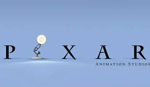

Pixar Animation Studios, commonly known as Pixar, is an American computer animation studio based in Emeryville, California, a subsidiary of Disney Studios Content owned by The Walt Disney Company. Pixar began in 1979 as part of the Lucasfilm computer division, known as the Graphics Group, before its spin-off as a corporation on February 3, 1986.
Pixar is best known for its feature films technologically powered by RenderMan, the company's own implementation of the industry-standard RenderMan Interface Specification image-rendering application programming interface. Luxo Jr., a desk lamp from the studio's 1986 short film of the same name, is the studio's mascot.